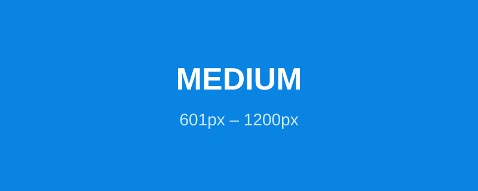

Thu hẹp/mở rộng cửa sổ rồi nạp lại trang: ảnh SMALL / MEDIUM / LARGE sẽ đổi.

Ảnh thường là tài nguyên nặng nhất → ảnh hưởng LCP (Core Web Vitals). Best practice:
WebP/AVIF, khai báo width/height tránh CLS, thêm loading="lazy"
cho ảnh dưới màn hình đầu. Icon/logo nên dùng SVG (co giãn không vỡ).